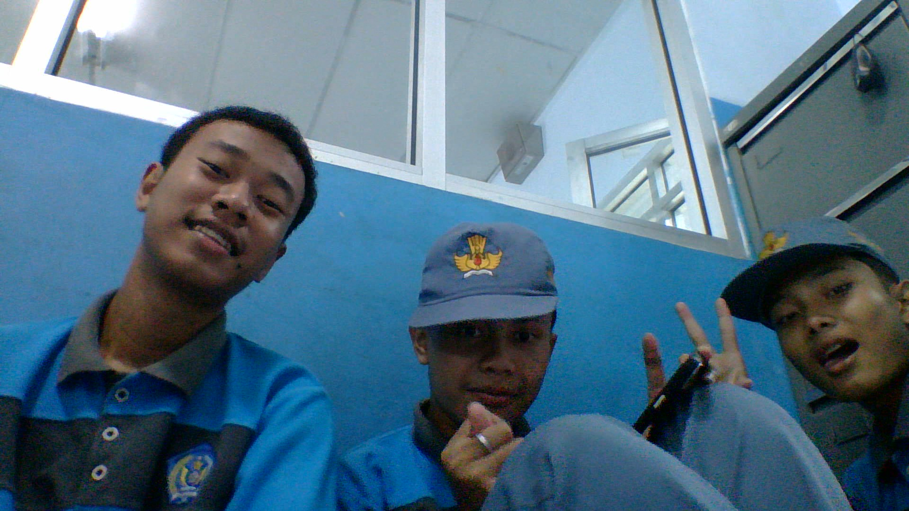

Ini adalah contoh Inline CSS
Anggota Kelompok:
- Wildan Faizi Faizullah Emran
- Miko Utomo
- Ziven Apta Pandita
Ini Adalah Halaman Dari Project Latihan CSS
Teknik Penyisipan CSS Ada 3 Yaitu:
- inline CSS
- internal CSS
- external CSS
Ini Adalah Contoh Penggunaan Selector class
Ayah kandar
